Hørning
Stabkirche und Grabhügel
(Original nicht mehr zu sehen)
Stabkirche (Nachbildung)

62 - Hørning - Letztes Update 17.09.2025
| Navidaten: 56.41178 10.20431 oder: Præstedalsvej 10, 8960 Randers SØ |
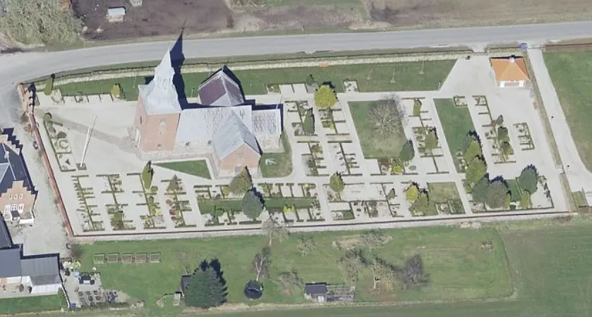
Das ist ein Luftfoto vom 01.04.2023 von Skråfoto - Lizenz: CC BY 4.0 - das die Kirche von Hørning zeigt. Skråfoto ist eine Webanwendung, die von Klimadatastyrelsen weltweit kostenlos bereitgestellt wird. Die Aufnahmen werden alle zwei Jahre erneuert und neben einer Senkrechtaufnahme wird ein Schrägbild aus jeder Himmelsrichtung angeboten, das man über eine Adresssuche aufrufen kann.
Am Samstag, 24.09.2022, habe ich dem Nationalmuseum in Kopenhagen und der damals neu konzipierten Wikingerausstellung "Togtet - på rejse i vikingernes verden" einen Besuch abstatten können, die dort ab dem 26.06.2021 bis zum 26.06.2024 zu sehen war. Das Original der Hørning Planke war auch ausgestellt - meine Fotos hier:
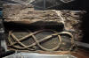 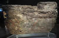 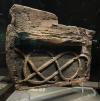 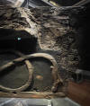 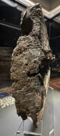


Bei der Restaurierung der frühmittelalterlichen Quadersteinkirche von Hørning im Jahre 1887 fand man nämlich im Füllmauerwerk des Ostgiebels ein Stück einer bemalten Eichenplanke, ein sogenanntes Hammerband, das die lotrechten Planken oben in einer Stabkirche zusammenhielt. An der Unterseite ist eine Nut für Stabwandplanken, an der Oberseite außen ein ausgearbeiteter Wulst als Auflager für Dachfirstbretter vorhanden. Im Mauerwerk war das Teil gleichermaßen unsichtbar wie funktionslos, und die Verwendung hölzerner Abfälle in Steinmauern erscheint auch nicht sehr sinnvoll. Es dürfte demnach einen nicht vordergründig zu deutenden Anlass gegeben haben, dieses Stück nicht einfach wegzuwerfen. Der Fällzeitpunkt der Planke liegt laut dendrochronologischer Untersuchung um 1060.
Das Hørning-Fragment, das heute eines der bedeutendsten landesgeschichtlichen Denkmäler im Nationalmuseum in Kopenhagen darstellt, ist eines von sehr wenigen erhaltenen Bauteilen, deren Bemalung noch vorhanden ist. Während die glatte Innenseite die Reste eines romanischen Rankenornaments mit Blütenmuster zeigt, gibt uns die Außenseite den bisher einzigen Beleg dafür, wie wir uns ein geschnitztes wikingerzeitliches Ornament farbig vorstellen können. Das im Flachrelief herausgearbeitete, linear ausgezogene und in die typischen Achterschleifen gelegte Urnes-Tier, mit länglichem Kopf mit Schnauzen- und Nackenzipfel, sowie mit dem kennzeichnenden mandelförmigen, nach vorne zugespitzten Auge hebt sich am Original leicht rötlich-holzfarben von einem dunklen, schwärzlich-violett erscheinenden Hintergrund ab. Für das Nationalmuseum wurden Analysen der Farbreste durchgeführt, aus denen sich ergab, dass ursprünglich das Tierband in starkem Rot vor einem tief blauschwarzen Hintergrund noch krasser erschien, als es der Erhaltungszustand des Originals, an dem die rote Farbe fast verschwunden ist, heute zeigt.
Bei einer Untersuchung durch das Nationalmuseum in Kopenhagen im Jahre 1960 fand man unter dem Kirchenfußboden in Hørning die Spuren einer 10 m langen Holzkirche, zu der das Hammerband gehört hat. Es handelte sich um einen Saalbau, 6 m x 4,5 m, mit je 4 rechteckigen Pfosten an den Längsseiten und eingezogenem quadratischen Chor von 3,3 m x 3,3 m, dessen Westpfosten außerhalb der Flucht zur Ostwand des Schiffes stehen. Der Eingang befand sich vermutlich in der Westwand, da ein runder Torpfosten nachgewiesen werden konnte. Genau westlich des Kirchengrundrisses fanden sich 4 Pfostenlöcher in einer Reihe und darunter in einer Brandschicht Tropfen von geschmolzenem Glockenmetall. Daher könnte es sich bei diesem Grabungsbefund um ein Glockengerüst gehandelt haben.
Außerdem zeigte sich bei der Untersuchung, dass die Kirche auf einem eingeebneten Grabhügel der Wikingerzeit stand. Dieser wurde offensichtlich beim Bau der Kirche eingeebnet. Der Hügel war aus Grassoden aufgebaut. Er war vermutlich von einem Steinkranz umgeben, von dem noch 3 Steine (1,2 - 1,4 m hoch) erhalten waren. Dadurch ergibt sich für den Grabhügel ein Durchmesser von 20 m und eine geschätzte Höhe von 3 m. Im Zentralgrab war eins der seltenen aus senkrechten Planken gebauten Kammergräber, wie sie u.a. von Jelling bekannt sind. Die Kammerwände bestanden aus 22 senkrecht stehenden Planken, die 20 bis 55 cm breit waren. Sie standen Kante an Kante, d.h. ohne Nut und Feder. Durch den Erddruck wurden sie später 8 - 10 cm in den Lehm eingedrückt. Eckpfosten waren nicht vorhanden. Der Kammerboden war nicht gedielt, sondern bestand aus Lehm.
In der Kammer fand sich ein Wagenkasten (2,0 x 1,1 m, Höhe mindestens 36 cm / bestehend aus 7 Planken, Niete, Nägel und Winkelbeschlägen) der als Sarg Verwendung fand und darin lagen Skelettreste einer Frauenbestattung mit einem silbernen Kleid, das mit Glasperlen geschmückt war. Vor dem Sarg stand ein kleiner, nur 30 cm hoher Eichenholztisch mit hoher Kante, der wie eine lange Kiste auf vier Beinen aussieht - der älteste seiner Art in Skandinavien -, und ein mit einem Mammen-Ringerike-Bandmotiv fein gemustertes Bronzegefäß, vermutlich ein Waschfass, durch dass das Grab um das Jahr 1000 datiert werden kann. In dem Grab fanden sich weitere Dinge wie Holzeimer, rundes Holzgefäß, Tongefäß, Glasscherbe - eventuell von einem Glasbecher, Messer mit Silberdrahtumwicklung am Griff, 2 Wetzsteine, Bleigewicht, Silber- und Eisenfragmente - eventuell von einer Waage, u.a.
Es fanden sich in dem Kammergrab auch Haselnuss-Stöcke, die in Form eines Kreuzes angebracht waren. Die Haselnuss-Stöcke weisen vielleicht - zusätzlich zu der Anbringung in Kreuzform - auf einen christlichen Zug in einem heidnischen Grab hin, da die Haselnuss im Mittelalter in südlichen Ländern als ein Symbol der Wiedergeburt verehrt wurde. Die Nuss ist der Kern, aus dem der Tote stets von neuem hervorspringt.
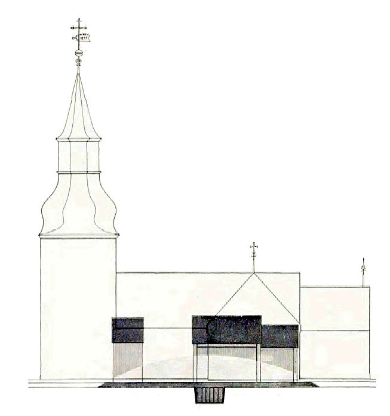
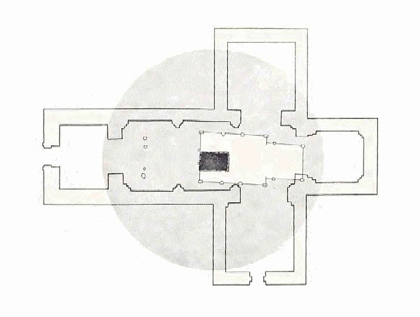
Bildquelle: Knud ]. Krogh og Olfert Voss - Fra hedenskab til kristendom i Hørning - En vikingetids kammergrav og en trækirke fra 1000-tallet under Hørning kirke - Nationalmuseets Arbejdsmark 1961 - S. 6 und S. 25 - Lizenz: CC BY-SA 4.0
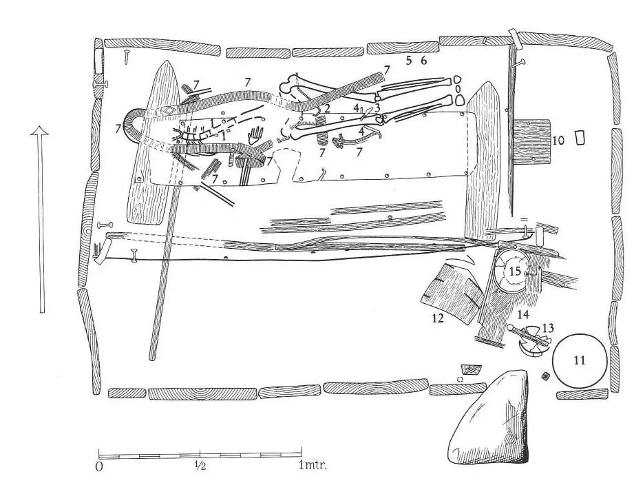
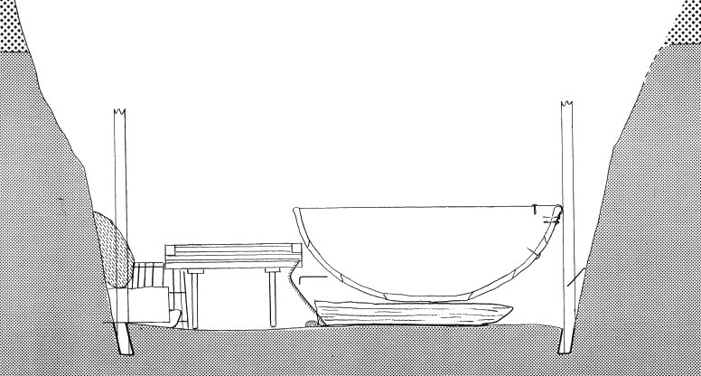
Bildquelle: Mammen - Grav, kunst og samfund i vikingetid - Mette Ivseren, 1991, darin: Hørning-graven, En kammergrav fra o. 1000 med kvinde begravet i vognfading, Olfert Voss, S. 189 - 203, Plan auf der S. 194 und 196 - Lizenz: CC BY-SA 4.0
Im Rahmen meiner 2022 Jütland Wikinger Tour habe ich am Mittwoch, 15.06.2022, auch einmal wieder die heutige Kirche in Hørning aufgesucht, die am Ortsrand liegt. Die Kirche war verschlossen und auch sonst keinerlei Infotafeln usw. zu der früheren Stabkirche / Grabhügel usw.


Über diese Verlinkung Kirche in Hørning wird man auf eine Informationsseite in dänischer Sprache geführt. Am Beginn ist ein YouTube Video mit Drohnenaufnahmen eingestellt. Im Innenraum werden umfangreiche Erklärungen zur Ausstattung durch Frau Anna Kjærgreen und Herrn Erik Engvang abgegeben. Er hat außerdem am Ende noch eine PowerPoint Präsentation mit 100 Seiten veröffentlicht, die alte und neue Ansichten zur Kirche zeigen.
Eine Rekonstruktion der Stabkirche findet sich dagegen neben dem neuen Moesgård Museum in Århus. Kurze Informationen findet man seitens des Museums in dänischer Sprache über diesen Link.
Hier erhält man eine Vorstellung wie die Vorläufer der dänischen Steinkirchen ausgesehen haben. Das bevorzugte Bauholz der Wikingerzeit war Eichenholz. Aus diesem Material wurde sowohl die Stabkirche von Hørning wie auch die Nachbildung von Moesgård gebaut. Das Behauen des schweren Holzes wurde mit Querbeilen ausgeführt. Dieser Beiltyp war lange Tradition. Die Handwerker der Wikingerzeit waren mit diesen Werkzeugen vertraut, und bis in unsere Zeit hinein haben Schiffszimmerleute sie benutzt.
Das Dach, das aus ungefähr 1600 Schindeln besteht, ist einem heute noch existierenden, gotländischen Kirchendach aus dem 12. Jahrhundert nachgebildet. Der obere Rahmen der Stabkirche in Moesgård ist eine genaue Nachbildung der geschnitzten Außenseite des Hørningfragments. Da über die Einrichtung der Stabkirche von Hørning nichts bekannt ist, wurde sie in der Art der mittelalterlichen Steinkirchen nachgebildet.
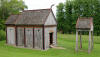 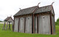 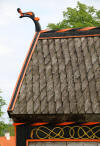 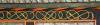


Dieses Foto der Planke ist der digitalen Sammlung des Nationalmuseums Kopenhagen entnommen und (irgendwann) von John Lee aufgenommen worden - Lizenz für beide Fotos: CC-BY-SA
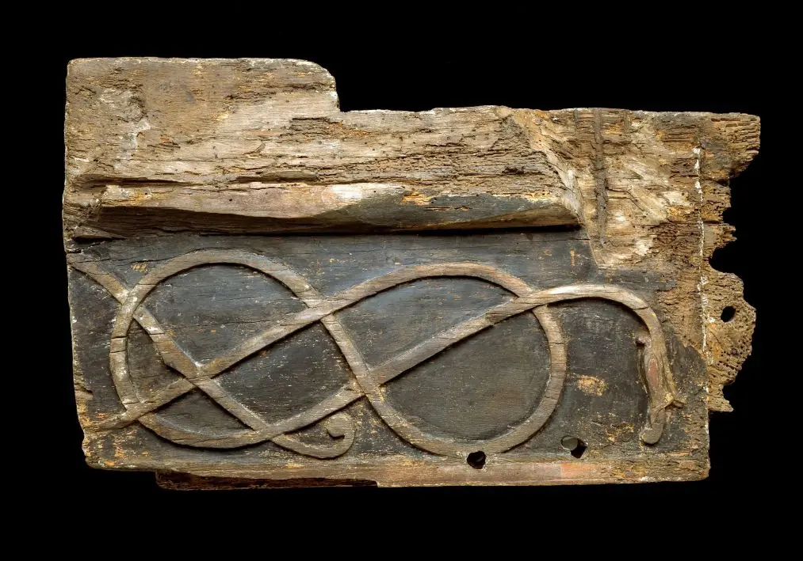
Er hat auch dieses Foto, das die Rückseite der Planke zeigt, aufgenommen.
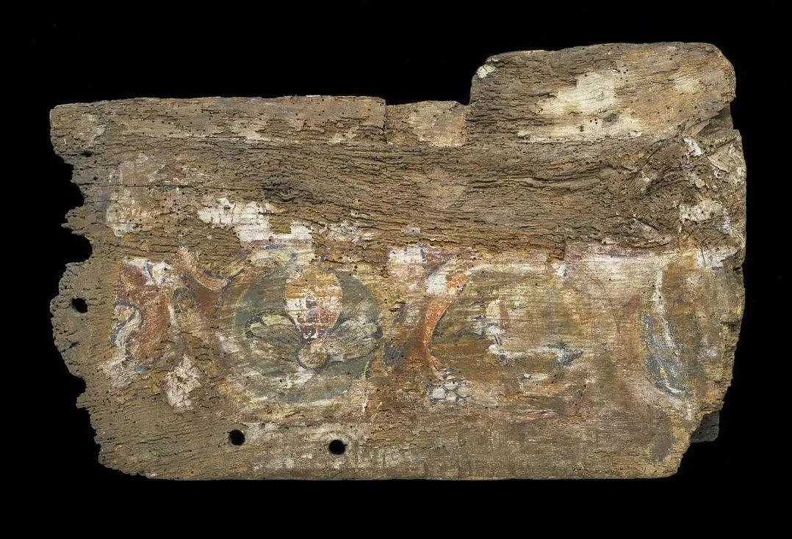
Prof. Julius Magnus Petersen (*04.09.1827 - 31.01.1917, Archäologischer Zeichner und Restaurator - link-LIVES - Bestattungsprotokoll),
 Bildquelle: Fotografie
von 1903 von Fotograf Marius Christensen
(*24.06.1874 -
25.06.1907) -
Det Kgl. Biblioteks billedsamling - Lizenz:
Public Domain
Bildquelle: Fotografie
von 1903 von Fotograf Marius Christensen
(*24.06.1874 -
25.06.1907) -
Det Kgl. Biblioteks billedsamling - Lizenz:
Public Domain
ist im Hinblick auf die Wiedergabe von Runensteinen der vermutlich beste Zeichner seiner Zeit. Er hat auch das Hammerband - Vorder- und Rückseite - gezeichnet. Gegenüber den eigentlich sehr guten Farbfotos oben sieht man bei ihm aber trotzdem deutlich mehr Details auf der Rückseite der Planke.
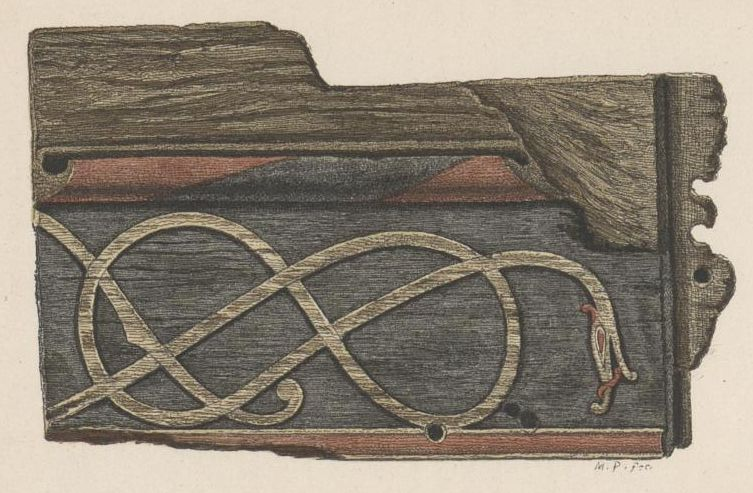
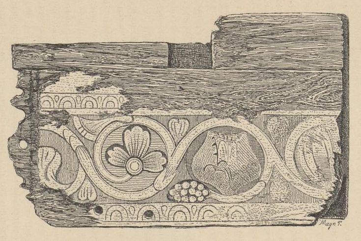
Quelle: Aarbøger for nordisk oldkyndighed og historie - 1894 - Lizenz: Public Domain
Literaturhinweise:
Henry Petersen - Bygningslevninger af træ fra Danmarks tidlige Middelalder, Aarbøger for nordisk oldkyndighed og historie - 1894 - S. 377-393 - zur Hørning Planke ab S. 383 - Farbige, zeichnerische Wiedergabe der Planke von Magnus Petersen auf S. 401
Knud ]. Krogh og Olfert Voss - Fra hedenskab til kristendom i Hørning - En vikingetids kammergrav og en trækirke fra 1000-tallet under Hørning kirke - Nationalmuseets Arbejdsmark 1961 - S. 5-34
Mette Ivseren - Mammen - Grav, kunst og samfund i vikingetid - 1991 - darin: Hørning-graven, En kammergrav fra o. 1000 med kvinde begravet i vognfading, Olfert Voss, S. 189 - 203
Jens Jeppesen og Holger Schmidt - Rekonstruktion af stavkirken fra Hørning - KUML 39, 1993-94, S. 263-276
Anne Hedeager Krag og Lise Ræder Knudsen - Vikingetidstekstiler - Nye opdagelser fra gravfundene i Hvilehøj og Hørning - Nationalmuseets arbejdsmark - 1999, S. 159-170